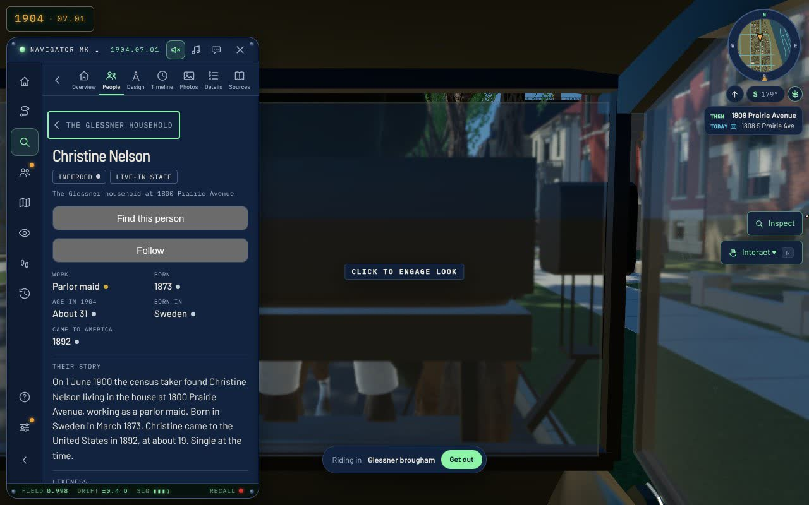
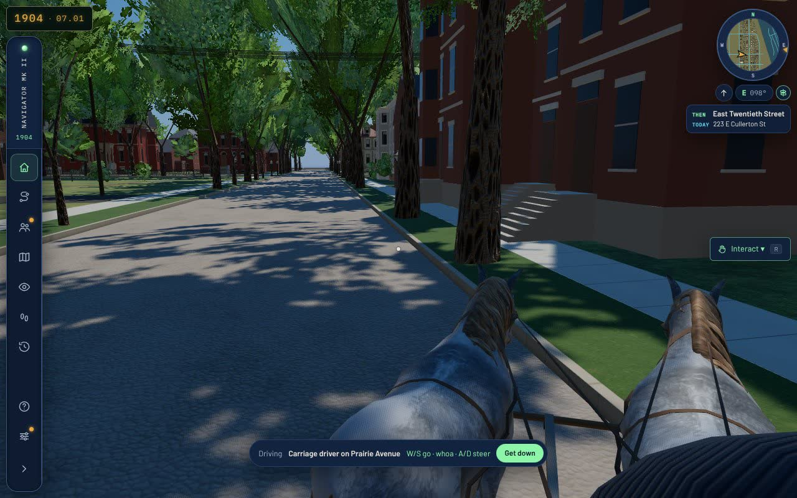
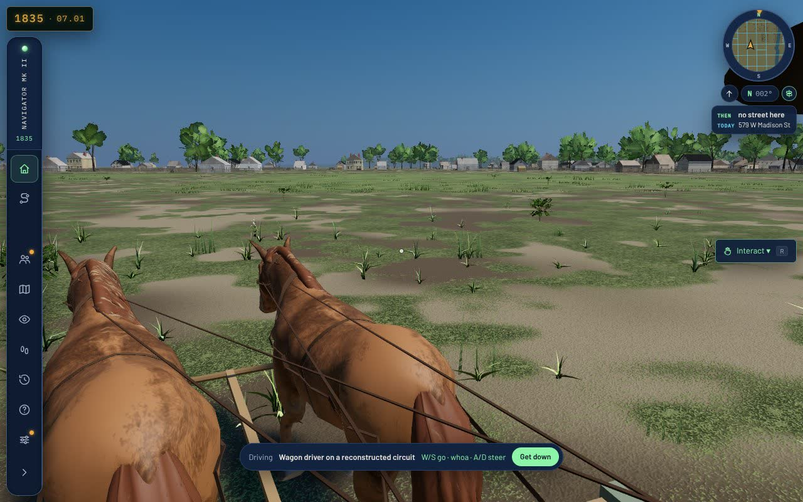
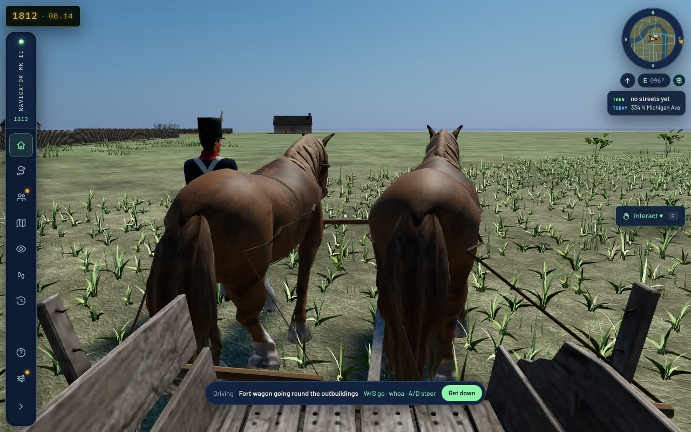
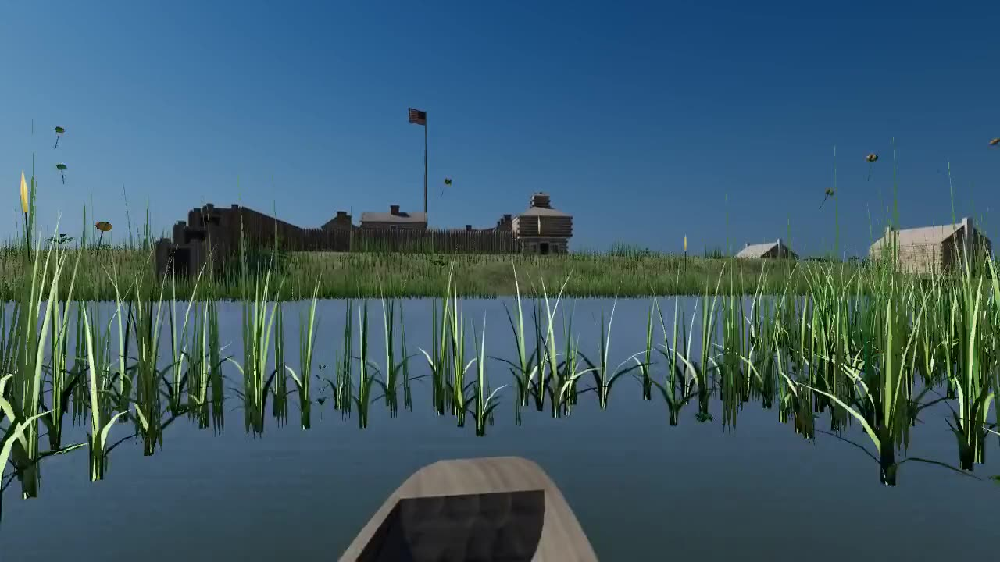
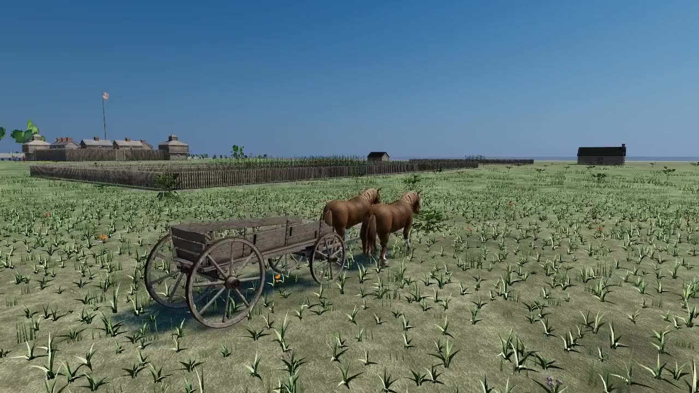

Climb aboard. Take the reins.
Before the streetcar reached the avenue and the bridge reached the river, Chicago moved by horse and by boat. In 4D Chicago you can ride with it: board a carriage or a wagon and drive the team, or paddle across the river where there is no bridge yet.
1904 · broughamThe avenue's own carriages, on the move.
The Prairie Avenue families' broughams drive their own rounds of the blocks, the Pullmans' and the Armours' among them, and give way to each other where their routes cross. Each coach has its own paint, wear and mud, each pair its own coats, and each coachman his own livery. You hear the hooves and wheels as they pass, and you can climb up and drive.
- BoardWalk up to any carriage or wagon and climb aboard
- DriveThe movement keys, or the thumb stick, become the reins
- Step backStand in the road and the team stops; step aside and it drives on

1904 · inside the broughamA seat in the Glessner brougham.
Take a seat inside the Glessners' own carriage and ride the avenue as the family did, past the neighbours' houses and back up the alley to the coach house behind Glessner House.
Every year, a team to drive.
Screens from the app: the reins in your hands in 1904, 1835 and 1812.

1904 · carriage
1835 · wagon
1812 · wagon
1812 · crossingNo bridges. Paddle across.
In 1812 the river has no bridge. Boats are drawn up at the crossings people used: dugouts, bark canoes and skiffs, each a little different in shape and weathering. Walk up, step in, paddle across, and step out on the far bank. Kinzie's two pirogues and the canoes at Lee's Place are in the record; the rest are reconstructed and say so.
- CrossingsThe fort's wharf, the Kinzie house, the Burns house, the forks, Hardscrabble
- BoatsDugouts, bark canoes and skiffs, the way the town crossed

1812 · wagonFreight on the move.
The fort's wagon makes its rounds and a team hauls along the shore road in 1812; in 1835 wagons work the town's streets. On the morning of 15 August 1812 the garrison's wagons carry the women and children in the column out of the fort.
Find a team. Climb aboard.
Runs in your browser on a computer, a phone or a VR headset. Sign in once and every year is open.
Opens the Temporal Observatory · pick a destination · W A S D to walk, or the thumb stick on a phone